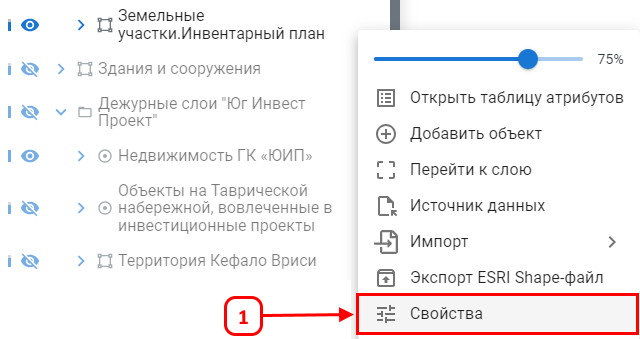
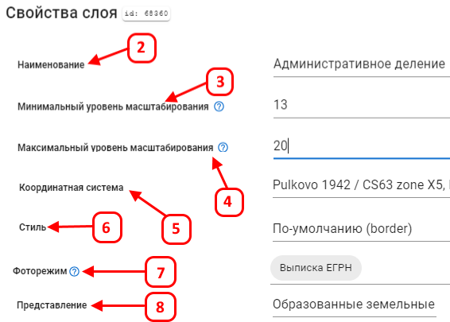
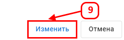
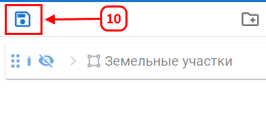

Свойства слоя
Свойства слоя используются для настройки и изменения параметров отображения слоя на карте.
Для открытия свойств слоя нажмите (1).

В открывшемся окне доступны следующие настройки:
- Наименование (2) — название слоя, отображаемое в проекте.
- Минимальный и максимальный уровень масштабирования (3, 4) — определяют масштаб карты, при котором слой будет виден.
- Координатная система (5) — задает систему координат, в которой отображается слой.
- Настройка стиля (6) — позволяет выбрать один из десяти базовых стилей или настроить стиль вручную.
- Фоторежим (7) — при проколе объектов отображаются прикрепленные к ним фотографии.
- Представление (8) — выбор представления данных, влияющий на условные обозначения на карте и состав атрибутивных данных.

Нажмите Изменить (9) для сохранения параметров отображения слоя.

После завершения настроек нажмите Сохранить (10).
